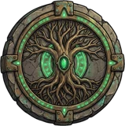
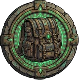
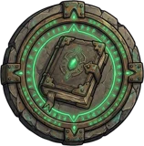

為手機直式操作設計，單手就能一路爬進深淵
死亡不是終點，而是下一位冒險者起點的餘燼
倒下就是結束，存檔隨之消失。存檔也會即時保存，關掉重開也無法重骰命運。
五種職業各有專屬技能。MP 跨戰鬥保留，現在用掉，還是留給魔王？

以成就換取本能點，七大分支加上職業專屬節點，點數永遠不夠用，流派由你決定。

只能使用第一格的物品。新撿到的神裝，得等前面的藥水用完才穿得上。
每季有特定屬性的怪物更常出現，搭配本能的屬性特化，爭奪當季排名。

20 個成就（含隱藏成就）與每日、每週任務，每一局都有新的目標。
倒下的英雄會留下一件遺物，其他冒險者能在遺跡中撿到。
巨石門戶、靈魂天秤……屬性越高越容易成功，失敗的代價隨深度增加。
五種截然不同的靈魂，五種踏入深淵的方式
鋼鐵般的肉體擁有更高的力量 (STR)，天生帶有額外的暴擊率與暴擊傷害。
暴擊率 15%，暴擊時造成更高倍率的重擊。
必定暴擊，暴擊倍率額外 +0.6。被反擊與擊殺時回復 MP。
靈巧的避難者，擁有高敏捷 (DEX)。生命脆弱，卻能在混沌中洞察前方的危險。
能直接看穿路線上的怪物與掉落物。
這次攻擊後不會被反擊，壓力也不會增加。每前進一層與擊殺時回復 MP。
禁忌血咒的使用者，擁有高智力 (INT)，以鮮血祭儀換取撼動深淵的破壞力。
每次攻擊燃燒生命，換取基於 INT 的額外傷害；回復道具效果較差。
吸取造成的傷害回復 HP。只有擊殺時回復 MP。
追求真理的學者，擁有極高的感知 (PER)、最多的初始點數與升級成長。
初始配點與每級成長點數都比其他職業多。
看穿弱點，無視防禦，傷害 ×1.5。前進與事件檢定成功時回復 MP。
神祕的生物，天生極高的幸運 (LUK)。這隻波貝將會改變生態。
回復道具效果 ×1.2，初始點數極多。
會發生什麼事……誰知道呢？幸運越高，好結果越多。
其他四個職業各自到達第 20 層後解鎖
多半是怪物，也可能是需要擲骰的隨機事件，或是前人留下遺物的英雄遺跡。
更強的怪物，掉落率加倍。
三倍生命的強敵，掉落率大幅提升。怪物強度每層提升 2.5%。
每 5 層會遇到篝火（回復已損失 HP 的 25%）或神祕祭壇（全屬性永久 +1），接著是深淵商人。升級獲得的技能點只能在這裡分配。
第 20 層起每深入一層、每次被反擊，壓力都會上升（上限 200）。受到的傷害 ×(1 + 壓力 / 100)。
只能使用或丟棄第一格，而且只有裝備能丟。
「有時候，喝下一瓶毒藥是為了能拿起下一把神兵。」